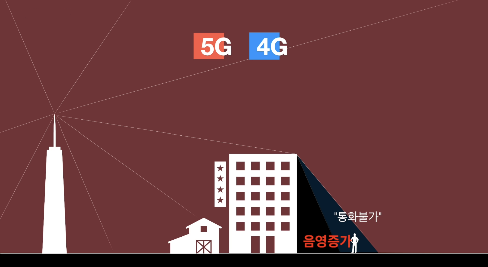

mmWave의 문제점
1. 수분, 산소에 의한 신호 손실 증가
짧은 파장에 고주파 영역들을 사용하게 되면 전파 손실이 증가하게 됩니다. mmWave 같은 경우에는 특히 수분
산소에 의한 신호 손실이 크다고 합니다. 만약 이런 특성을 가진 전파를 이동통신용으로 사용하게 되면 비가
올 때마다 통신에 문제가 생길 수 있습니다.
2. 안테나 유효 수신 면적 감소에 따른 전파 수신 어려움
고주파를 사용하게 되면 개별 안테나에서 수신할 수 있는 전파의 양이 줄어듭니다. mmWave와 같은 고주파를 통신에
사용하게 되면 거리가 멀어질수록 전파가 더 손실이 되고, 힘들게 도달한 전파가 있다고 해도 수신에 어렵습니다.
3. 도심의 장애물에 의한 신호 손질 증가
실제 통신환경은 빼곡히 들어선 건물과 나무 산 등이 복잡하게 얽혀 있는 도심 속에 놓여 있는데 이때는 mmWave의
활용이 더욱 어려워집니다. 파장이 장애물의 가로막힌 상황에서 뒤편까지 전달되는 현상을 말하는 회절성의 경우
주파수 대역이 높을수록 회절성이 낮아지게 됩니다. 이러한 고주파를 이동통신에 사용하게 되면 건물과 나무 산 등에
가로막힌 전파에 의해 음영지역이 늘어나게 됩니다.
